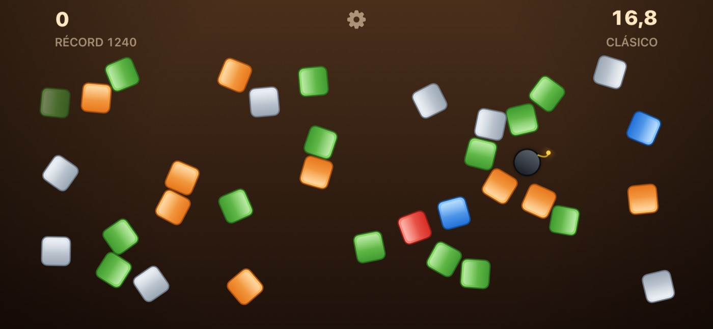
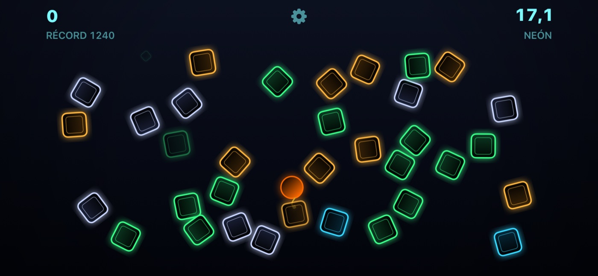
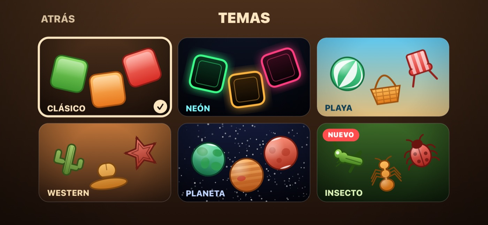
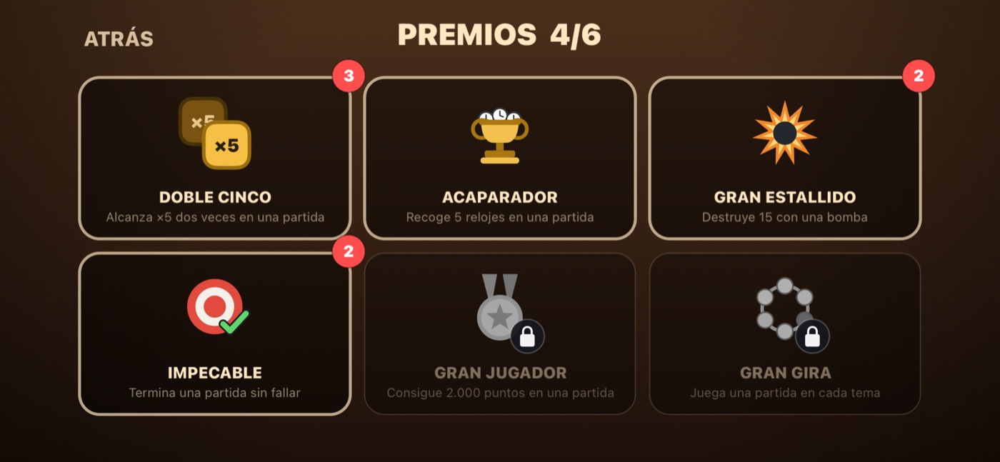
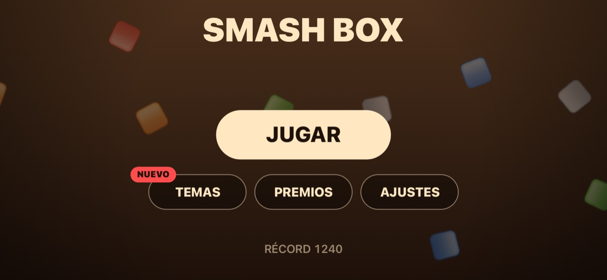

Smash Box
Treinta y tres segundos. Una regla: no falles.
Las cajas llegan desde todas partes. Tócalas para romperlas antes de que se acabe el tiempo — pero un toque que no acierta rompe tu cadena y cuesta más que el punto que no sumaste.
Seis temas, seis premios y un récord que te sigue entre el iPhone y el iPad. Sin anuncios, sin compras dentro de la app, sin cuentas y sin recoger nada sobre ti.

Cómo se juega
- 1
Toca las cajas
Las cajas entran volando por todos lados. Toca una para romperla y sumar sus puntos.
- 2
Encadena hasta ×5
Los aciertos seguidos suben el multiplicador: ×2 a los cinco, hasta ×5 a los cincuenta. Un toque que no da en nada te devuelve a ×1.
- 3
Atrapa relojes, guarda las bombas
Un reloj suma ocho segundos. Una bomba arrasa con todo lo que tiene alrededor; rinde más con la pantalla llena.
Todas las reglas, puntuaciones y premios →
Qué incluye
- Partidas de treinta y tres segundos, con multiplicador de cadena hasta ×5
- Seis temas: Clásico, Neón, Playa, Western, Planeta e Insecto
- Seis premios, cinco de ellos repetibles
- Récord y premios sincronizados por iCloud
- Vibración que puedes apagar
- Funciona completamente sin conexión
Capturas de pantalla



